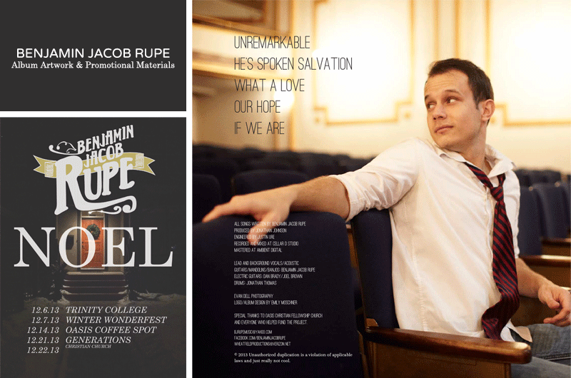
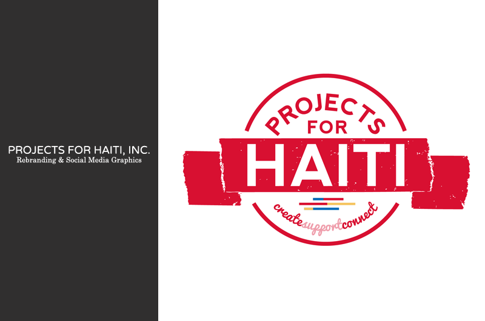

DESIGNS & ILLUSTRATIONS
For the past year and a half, I've fallen head over heels in love with graphic design.
Below are a few of my projects.

Since his Kickstarter campaign in the fall of 2012, I have worked closely with Benjamin Jacob Rupe and his team on visual branding.
The pieces sampled above include his Kickstarter promotional flier, Christmas tour 2012 flier, cover art for EP album and album release party flier.
As a marketing and communications intern with Gainesville nonprofit Projects for Haiti, I have visually rebranded the organization.
Above is the new and improved Projects for Haiti logo.